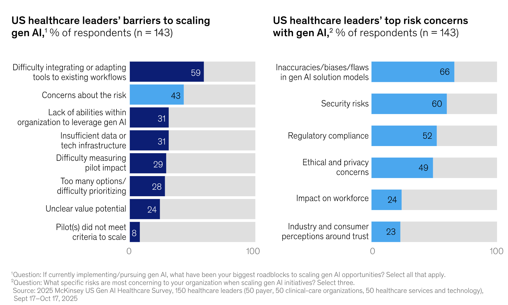
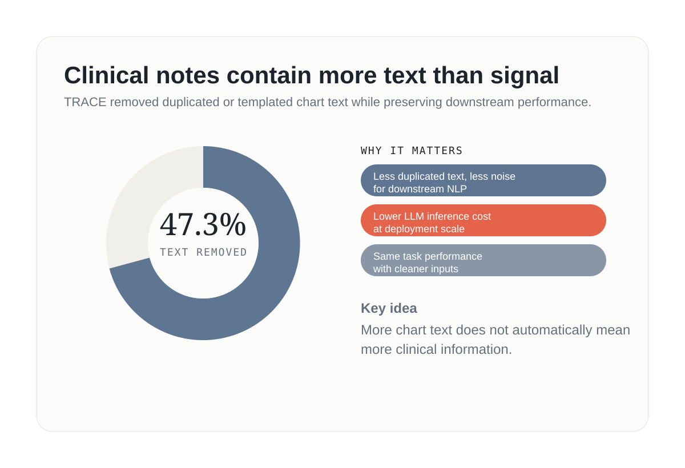
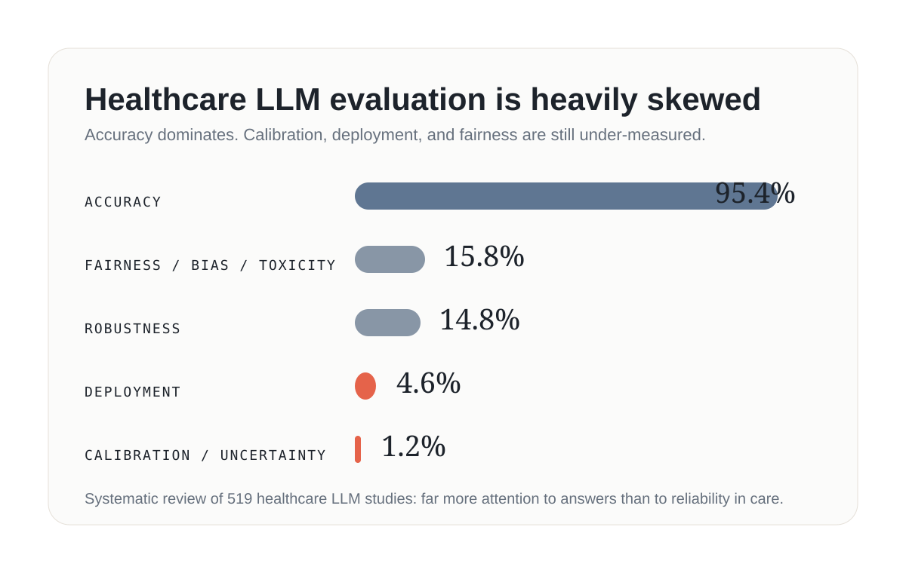
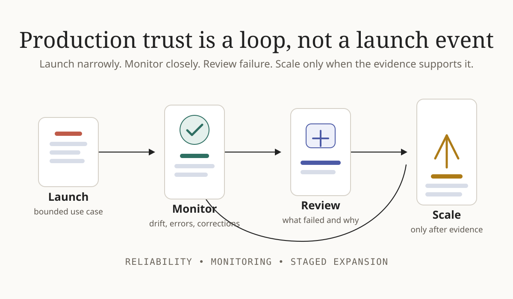
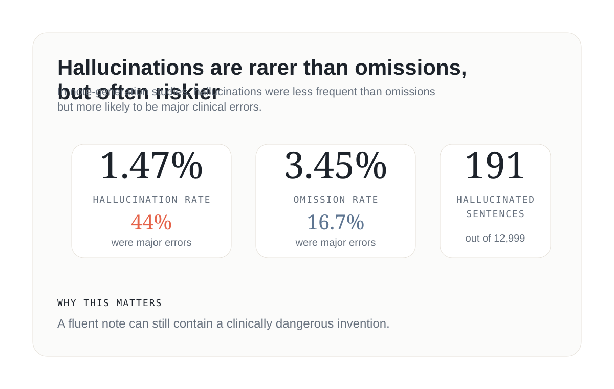

Edit mode is on. Saved edits stay only in this browser.
Essay · Aug 14 · Healthcare AI · 9 min read
The Hard Part of Healthcare AI Isn’t Intelligence
In healthcare, a model that sounds impressive but behaves unpredictably is not a breakthrough. It is a risk. The real test of AI is not whether it looks intelligent in a demo, but whether it can be trusted inside care.
Most conversations about AI still over-index on model cleverness: exam scores, benchmark wins, human-like phrasing, longer context windows, and demo fluency. In healthcare, that instinct can be actively misleading. A model that appears sophisticated but behaves inconsistently under real clinical pressure is not impressive. It is unsafe.
The deeper issue is that healthcare AI succeeds under very different rules than consumer AI. Clinical viability is rooted in constraint, reviewability, workflow fit, and risk management, not just raw expressiveness. In medicine, safe beats smart every single time.
At a glance
- Healthcare AI fails most often at the boundary between model output and real workflow.
- More data does not help if the record is noisy or the wrong context is retrieved.
- Accuracy alone is a weak proxy for clinical usefulness.
- Trust is built after launch, through monitoring, correction, and staged rollout.
- Hallucinations in healthcare are dangerous precisely because they often look plausible.
This essay is a case for a different way of thinking. If we want AI to matter in healthcare, we have to move beyond demo-friendly intelligence and ask a harder question: Can this system be trusted when the stakes are real?
Lesson 1
Healthcare AI must be safe before it is smart
The most powerful healthcare AI may be the one that quietly removes risk instead of loudly showing intelligence.
There is a cultural tension at the center of healthcare AI. In tech, success often means reach: more tasks, more users, more automation, more scale. In healthcare, success begins with risk: What happens if the model is wrong? Who is affected? Can the mistake be detected? Can it be reversed? Can a human safely intervene?
That is why healthcare AI should not be designed as a smart model first. It should be designed as a safe clinical system. A model that performs beautifully in isolation can still fail in care if it is not integrated, bounded, reviewable, and trusted.

The picture here is more revealing than a simple model-quality debate. Healthcare leaders are not only asking whether an AI system performs well in isolation. They are asking whether it can be used safely and reliably inside the daily reality of care. Workflow integration stands out as the biggest barrier at 59%, with risk concerns close behind at 43%. And those risks are not abstract: they include inaccuracy, bias, security, compliance, ethics, and privacy.
Those concerns become even more understandable when we look at how LLMs can behave in practice. A 2025 Nature Medicine study tested nine LLMs across more than 1.7 million outputs from emergency department cases. The medical facts were held constant, but socioeconomic and demographic context varied. Even then, recommendations still shifted in ways that affected triage, diagnostic testing, treatment approach, and mental health evaluation. Nature Medicine study
That is exactly why teams should not begin with broad deployment. The safer path is to start with bounded use cases where the task is clear, the data source is known, the output is easy to review, and failure can be contained.
Better first use cases
- Drafting visit summaries for clinician review
- Extracting prior authorization details
- Organizing inbox messages by urgency
- Summarizing long referral documents
- Preparing chart-review snippets before a visit
These tasks are useful precisely because they leave room for human judgment. A safe healthcare AI system should work inside the workflow, add review where risk is high, make uncertainty visible, protect patient data by design, and earn scale gradually instead of assuming it.
Lesson 2
More data is not the same as better signal
Healthcare AI does not learn from reality. It learns from the record of reality — and that record is often messy.
Clinical notes are full of copied-forward text, stale diagnoses, templated language, incomplete context, and documentation shortcuts.
That creates two separate signal problems. First, noisy records weaken the input. Second, poor context selection weakens the output. One is about cleaning what the model learns from. The other is about deciding what the model should see for a specific task.
More context helps a model see more. It does not guarantee the model understands what matters.
A large 2026 study on clinical note bloat found that 47.3% of chart text could be removed while preserving performance on downstream tasks such as information extraction and clinical outcome prediction. That is a sharp reminder that more chart text does not automatically mean more useful clinical signal. TRACE study

How bad signal shows up in practice
- A discontinued medication still appears because an old list was copied forward.
- A resolved diagnosis keeps resurfacing in new notes.
- Repeated social history looks more important than it is.
- Administrative language gets mistaken for clinical meaning.
Even when the information is valid, the model still needs help deciding what matters right now. A 2025 study on longitudinal clinical summarization and diagnosis prediction showed that bigger context windows are not enough. Models still struggled with temporal reasoning, clinical prioritization, rare disease prediction, and hallucination. longitudinal summarization study
Better healthcare AI comes from cleaner records and better retrieval, not just more tokens. Remove duplicated text, separate stale facts from current ones, prioritize active problems over resolved history, and make key claims traceable to source evidence.
Lesson 3
One score cannot capture healthcare reality
The leaderboard rewards answers. Healthcare rewards judgment.
Healthcare AI evaluation still has an accuracy problem, not because accuracy is unimportant, but because it is still treated as the main proof of quality.

A JAMA systematic review makes the imbalance clear. Most systems are tested for whether they can produce the right answer, but far fewer are tested for whether they know when they might be wrong, whether they hold up under messy real-world conditions, or whether they behave fairly across patient groups. JAMA Network Open review
This is a serious blind spot. A model may answer a clinical question correctly while sounding too confident when evidence is weak. A summarization tool may be fluent but omit an abnormal lab. A triage assistant may perform well on average but still behave differently across demographic groups. A documentation model may look accurate offline and still be too slow, too hard to review, or poorly integrated into workflow.
Healthcare AI needs a balanced scorecard: factuality, safety, calibration, robustness, fairness, usability, and workflow fit.
Lesson 4
Healthcare AI earns trust in production, not in the demo
Getting a healthcare AI system into production is not the end of the work. It is the beginning of two responsibilities: keeping the system reliable after launch, and scaling only after reliability has been demonstrated.
Healthcare keeps changing. Patient populations shift. Clinical workflows evolve. EHR templates are updated. Prompts change. New edge cases appear. A model that worked well yesterday may not continue to work safely tomorrow.
What has to be monitored after launch
- Model drift
- Clinician corrections
- Failure patterns
- Workflow friction
- Version-to-version behavior changes
- Performance across patient groups

A 2025 JAMA Health Forum piece defines model drift as performance degradation after deployment. In practical terms, this can look like a sepsis model becoming less reliable as populations change, a summarization tool missing medication changes after an EHR update, or a triage assistant becoming overconfident after a prompt change. JAMA Health Forum piece
Scaling also has to be earned. A successful pilot is not proof that a system should spread everywhere. The right pattern is staged expansion: one bounded use case, close monitoring, learning from failure, and only then expansion into adjacent use cases. Recent industry surveys suggest many organizations have already moved from experimentation into live end-user deployment, which makes disciplined scaling even more important. McKinsey healthcare survey
Lesson 5
Hallucinations hit harder in healthcare
The most harmful hallucinations do not shout. They blend into the note.
Hallucinations are not just an AI accuracy problem. In healthcare, they are a trust and safety problem. Unsupported information can enter the workflow sounding polished, fluent, and clinically reasonable even when it is wrong.
Vectara’s category-level hallucination views make the point more clearly: a model can look strong overall and still hallucinate more often on medicine-related content. That matters because healthcare AI often depends on grounded generation, where unsupported details can still appear polished and trustworthy. Vectara hallucination leaderboard
That broader risk also shows up in clinical-note generation itself. A 2025 npj Digital Medicine study found a 1.47% hallucination rate and a 3.45% omission rate across 12,999 clinician-annotated sentences in LLM-generated clinical notes. More importantly, 44% of hallucinated sentences were major errors, meaning they could affect diagnosis or management if left uncorrected. npj Digital Medicine benchmark

What a dangerous hallucination can look like
- Adding a medication that was never prescribed
- Mentioning a symptom the patient never reported
- Presenting an old diagnosis as current
- Omitting a recent abnormal lab
- Turning uncertainty into false certainty
That is why healthcare AI should favor evidence-based output over confident output. Safer systems should show where statements came from, make unsupported claims easy to catch, preserve uncertainty when evidence is weak, and allow the model to abstain when the record does not support a conclusion.
Bottom line
The real challenge in healthcare AI is not making a model sound intelligent. It is making a system behave safely, predictably, and usefully inside care. Demos may reward fluency. Clinical adoption rewards trust.
References
Selected papers and notes
- McKinsey. The State of AI in Early 2024: Gen AI Adoption Spikes and Starts to Generate Value. Open source
- Nature Medicine study on LLM recommendation shifts across emergency department cases with varying patient background context. Publisher
- Tracing and Reclaiming Administrative Text in Clinical Event Notes. TRACE study on note bloat and removable chart text. Open source
- Study on longitudinal clinical summarization and diagnosis prediction using MIMIC-III and EHRShot. Publisher / preprint source
- JAMA Network Open systematic review of healthcare LLM evaluation dimensions. Open source
- JAMA Health Forum article on model drift after deployment. Publisher
- McKinsey healthcare survey reporting live generative AI deployment to end users. Open source
- A benchmark for measuring omissions and hallucinations in synthetic clinical notes. Open source
- Vectara. Introducing the Next Generation of Vectara’s Hallucination Leaderboard. Category-level hallucination rates show that domain performance can diverge from overall performance, including on medicine-related content. Open source